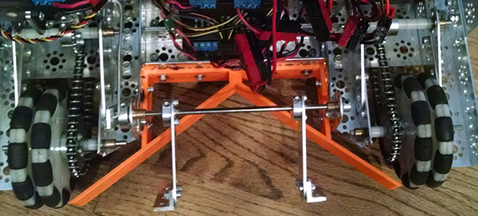

Written by Jayesh

Task: Create mechanism to capture Rolling Goals
Our main mechanism for capturing the balls for scoring are now in place. A simple 3D printing of two triangle-shaped items are nailed opposite each other, allowing for a perfect diameter to
contain both the balls and a snug fit for the rolling goals. We now also have the mechanical design for the servo toggle. A simple little push-based method allows for the tubes to pop up
in a very small space of time. This allows us to have easy access to scoring in the higher goals with ease and role them to the destination and secure us maximum points in the robot
game.
Reflections:
Now that we have this mechanism to maneuver the rolling goals, after we have filled each tube, hopefully with help from our team-mates, we now have an efficient system of delivering the
tubes to the correct ending position. This will pobable be the deciding factor in each game; whether or not we can efficiently fill the tubes and bring them to position for maximum points.